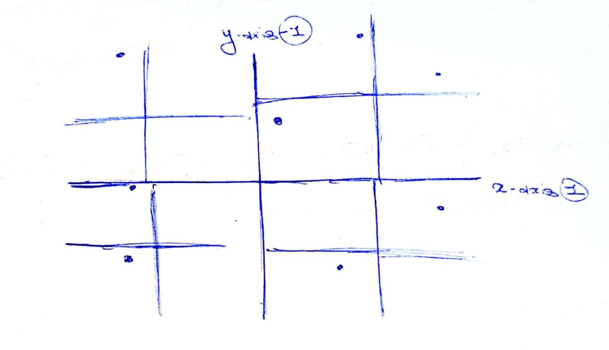

Finding Near Neighbors
Contents
Finding Near Neighbors¶
We are given a set of data points and a query \(Q\) and we have to answer what is the nearest data point to a query.
The data points are known to us, so we can preprocess the data beforehand.
Applications¶
There are numerious applications to fining nearest neighbors, some of which are as follows:
Finding Similar Images in Search
Finding Near Duplicate Webpages/Articles - Specifically used in de-duplicating the websites. For eg:- While implemnting a search engine, we don’t want multiple copies of the same article with only minor variations, so we perform de-duplication.
Clustering - Given a particular datapoint, we want to find the items that are close to it.
Nearest Neighbor Classifier - In a nearest neighbor classifier, given a test point, we look at the labels of the neighbors around it and assign a label to the test point based on the labels of the neighbors. So naturally, before we assign a label, we need to find the neighbors efficiently.
Variants¶
Anoter variant of this algorithm is All Pairs Near Neighbor. In the variation, rather than for a particular query, given a dataset we need to find all pairs of datapoints that are considered near neighbors.
Naive Scan¶
Given a query, we go over all the data points. Assuming that the points are vectors in \(\mathbb{R}^d\), then we \(O(nd)\) time for each query, where \(n\) is the no. of points, because we compare each point to the query.
Voronoi Partition¶
Given a set a point, we compute the Voronoi Partition of the points. Suppose we are inn \(\mathbb{R}^2\), the following image shows the voronoi partition. Then, given a point we mark off all the regions that are closest to that particular point, which will be the Voronoi cell. The following image shows the voronoi cell for one point.

Fig. 42 :name: Voronoi Paritioning¶
Voronoi Parition with regions marked closest to the pink point[Source]
We do this for all the points. Then, given a query, we just need to check which Voroni Partition it falls in.
Unfortunately, Voronoi Partition in \(d\) dimensions needs a lot of storage. For \(n\) points in \(d\) dimensions, it needs \(n^\frac{d}{2}\) storage, which is too much.
Space Partitioning Trees¶
Given some datapoints, we recursively partition the space. In the following image, we first paritioned the space in x-axis and y-axis. The we further partition each quarter with their relative x-axis and y-axis.
{kind=link}
In the tree, the top level partition will have 4 children corresponding the 4 axis. And each of those partitions will have 4 children, corresponding to the 4 axis and so on.

Given a query point, we node we ask which children we need to traverse. The partitioning method mentioned above is very naive. Deciding how to the partitioning is the most critical part.
Kd-Trees¶
Originally, \(k\) used to denote the number of dimensions, for e.g. \(2d\) or \(3d\) trees. Our idea here is that, each level of the tree each uses a single dimension to partition.
Starting with the entire set of points, with each level of tree, we associate a cutting dimension.
We then cycle through these dimensions. For e.g., if we start with the first dimension and we form the first cut according to some threshold in the first dimension. Then at the second level we use the second dimension and choose some threshold level in second dimension and so on.
For choosing the threshold, at every step, we try to balance the tree. To do so, we choose the point which is the median along that dimension and create an axis-aligned partition.
Example¶
Here is an exmaple of kd tree for 2 dimentions.
First, we devide a space with a line passing thorugh a median point of datapoint.

Then, we devide S1 space into two by its median point, and same with S2 space.
We devide every subspace untill all points are covered

With every node, there is a data point associated with that as we are using median point for division. The leaves node also contain datapoints.
Complexity¶
Space taken = \(O (n)\)
Nearest neighbour Search
Defeatist Search:
Only search the child that contain the query point.
Does not give always a correct answer, as a nearest neighbour point might be in another cell.
Desending Search:
Maintain the current near neighbour and distance to it.
Visit one or both children depending on wheather there is intersection.
If there is an intersection check that cell also.
Defenitely gives a nearest neighbour but might end up searching antire tree.
Priority Search:
Maintain a priority queue of the regions depending on distance.
Decide to visit the cell by the priority of the distance to the cell.
Variants of space partitioning trees¶
1. Random Projection (RP) tree¶
Picks a random direction from the unit sphere to create a hyperplane which splits the data at the median. Subsequent hyperplanes further divide the data at the median value into smaller partitions.
2. Principal Direction (PD or PCA) tree¶
Instead of choosing a random direction each time for splitting the data,
the direction pointed by the principal eigenvector of the covariance
matrix is chosen to split the data. The data is split at the median
using the direction obtained as mentioned.
The two splits obtained are further divided by the same rule by calculating the covariance matrix of each split. The intuition behind choosing this direction is that the variance along the direction of the principal eigenvector is the maximum. Thus, the hyperplane that is orthogonal to this direction is very effective in partitioning the data. However, this method is computationally expensive as we need to calculate the covariance matrices for each split of the data.
3. 2-Mean tree¶
Run k-means on the data for k=2 and then split the data by the plane that bisects the line joining the two centroids obtained from the k-means algorithm.
Intrinsic dimension¶
Let us assume that the data \(\in \mathbb{R}^D\). If the \(d\) largest eigenvectors account for \(1 - \epsilon\) fraction of the trace, then the data has an intrinsic dimension \(d\) where \(d < D\). This means that most of the data lies in \(\mathbb{R}^d\) instead of \(\mathbb{R}^D\).
Given that the data has an intrinsic dimension d, the partitioning algorithm must take this fact into account while creating new partitions.
RP trees and PD trees can adapt to this smaller dimension while creating partitions but k-d trees do not. We can understand this by the fact that k-d trees cycle through all \(D\) dimensions while generating new partitions.